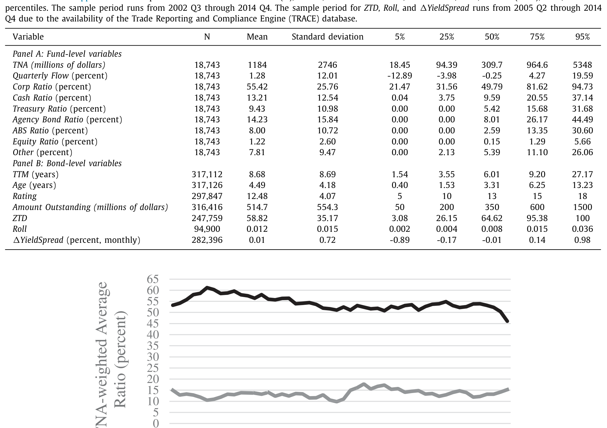
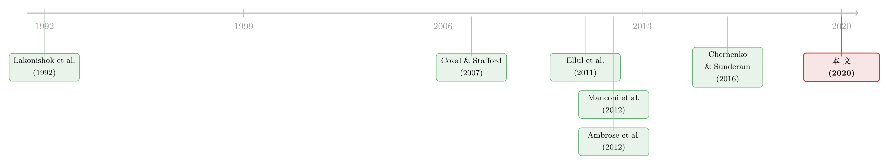

同一个发行人的两只债券，戳破了「火线甩卖」的幻觉
本文读的是 Choi, Hoseinzade, Shin & Tehranian (2020, Journal of Financial Economics)：人人都担心公司债基金一旦遭遇大额赎回，就会被迫「火线甩卖 (fire sale)」、把债价砸出一个坑。可一旦你用「同一发行人的不同债券」这把尺子，把基金交易里基本面恶化的那部分剔除干净，所谓的火线甩卖几乎就消失了——因为债基会先动现金、先卖流动性好的资产，并不像股票基金那样「一块钱赎回就卖一块钱股票」。
1 一个让监管者夜不能寐的故事
先讲一个所有人都听得懂的恐怖故事。
过去十几年，钱像潮水一样涌进公司债共同基金 (corporate bond mutual funds, CBMFs)。基金每天都向投资者承诺「随时可赎回」，可它手里攥着的，却是一类出了名难脱手的资产——公司债。交易商银行在危机后受资本约束，做市能力大幅萎缩，市场流动性越来越薄。于是一个看似无懈可击的推理就成型了：
一旦市场风吹草动，投资者集体赎回 → 基金被迫抛售公司债 → 而市场又接不住 → 债价暴跌 → 净值进一步下挫 → 引发更多赎回……一个典型的、会自我强化的「火线甩卖」螺旋。美国金融稳定监督委员会 (FSOC) 在 2015 年的年报里，就把债券基金的扩张列为金融稳定的潜在威胁；SEC 随后在 2018 年出台 Rule 22e-4，强制开放式基金建立流动性管理方案。监管的子弹，是冲着这个故事去的。
这个故事听上去如此顺理成章，以至于很少有人停下来追问：它在数据里，真的成立吗？
本文四位作者——Jaewon Choi、Saeid Hoseinzade、Sean Seunghun Shin 与 Hassan Tehranian——做的，恰恰是这件「煞风景」的事。他们的结论相当反直觉：在控制住关键的混淆因素之后，公司债基金的赎回，并没有系统性地把债价砸出火线甩卖式的窟窿。
2 真正的难点：你看到的「甩卖」，到底是被赎回逼的，还是基金自己想卖的？
要理解这篇文章，必须先理解它跟谁过不去。
它过不去的，不是某个具体的结论，而是一整套被默认成立、却从未被严肃检验过的假设。
设想你在数据里观察到这样一幕：某只基金遭遇大额赎回，紧接着大举抛售某只债券，而这只债券的价格随后果然下跌了。教科书式的「火线甩卖」叙事会立刻拍板：你看，赎回 → 抛售 → 价格下跌，因果链条完整。文献里普遍的做法，正是假设基金「按比例缩减持仓 (scale down holdings)」——赎回多少，就照原样卖掉多少（Coval & Stafford, 2007; Hau & Lai, 2013）。
但这里藏着一个致命的漏洞。基金经理不是机器人，他在卖什么、卖多少上，是有判断的。如果他卖的，恰恰是那些他本来就看衰、预期未来会跑输的债券呢？ 那么后续的价格下跌，根源是基本面恶化，而不是流动性挤压。把这种「基于估值的卖出 (valuation-driven sales)」错认成「基于资金流的卖出 (flow-driven sales)」，你就会把本属于基本面的价格下跌，错记到火线甩卖的账上。
这就是全文的核心张力：赎回引致的价格下跌和基本面引致的价格下跌，在数据里长得一模一样，可经济含义天差地别。前者是流动性事故，关乎金融稳定；后者只是市场在正常地重新定价。而一只债券的「基本面」，几乎是不可观测的——这正是识别火线甩卖如此之难的根源。
接着，一个自然的问题就是：既然基本面看不见，我们怎么把它从价格变化里「减掉」？
3 识别策略：让同一家公司的两只债券彼此作证
这篇文章最漂亮的一步，是它找到了一个近乎天然的对照组。
它利用了公司债市场一个常被忽视的结构性特征：很多公司同时有多只在外流通的债券。同一个发行人，发了债 A 和债 B，它们共享完全相同的发行人基本面——同样的信用风险、同样的经营前景、同样的违约概率。可如果债 A 主要被一批正在遭遇大额赎回的基金持有，而债 B 主要被那些没什么赎回压力的基金持有，那么二者在价格上的任何差异，就不可能来自基本面（基本面被「同一家公司」这个事实锁死了），只能来自基金交易这一侧。
这就是识别的钥匙。作者用两个互补的实证设计把它拧开：
第一个设计：发行人—时间固定效应 (issuer-time fixed effects)。 回归里，被解释变量是公司债信用利差的变化 (changes in yield spreads)，核心解释变量是该债券暴露于「赎回引致抛售」的程度。一旦放进发行人×季度的固定效应，它就吸收掉了关于这家公司基本面的一切随时间变化的不可观测信息——剩下能解释债券间利差差异的，就只有基金交易这一个通道了。
这个设计还有一个妙处：它让作者能够直接演示「不控制基本面会错到哪去」——只要把发行人—时间固定效应拿掉，再跑一遍同样的回归，对比两组系数即可。
第二个设计：双重差分 (difference-in-differences, DiD)。 处理组是遭受极端抛售压力的债券；对照组则是同一发行人、同样信用评级、同样受偿顺序 (seniority)、同样的赎回/赎买条款、且期限相近、但被那些没有显著赎回的基金所持有的债券。通过这样一套细致的匹配，处理组和对照组在债券层面的特征被对齐到几乎可以「认错人」，于是两者后续价格反应的差异，就能干净地归因于资金流。
两个设计都死死咬住同一件事——把发行人基本面这条暗线掐断，再看价格还动不动。
4 数据：783 只基金，二十多万个债券—季度
在看结果之前，先交代家底。
样本是 2002 Q3 到 2014 Q4 的美国开放式公司债共同基金。基金季度持仓来自 Morningstar Direct，基金收益与特征来自 CRSP 免生存偏误共同基金库；债券定价用的是增强版 TRACE（因 TRACE 在 2005 年 2 月后才全面覆盖，含价格的样本从 2005 年起）；债券条款来自 Mergent FISD。剔除可转债、外币债、以及到期不足一年的债券之后，合并 FISD 与 Morningstar 得到 317,112 个债券—季度观测；再并入 TRACE 价格，最终样本是 247,759 个债券—季度观测（2005–2014）。观测单位是债券—季度，最终留下 783 只独立的公司债基金。
基金的资金流，用的是 Coval & Stafford (2007) 的标准口径：
$$\text{flow}_{j,t} = \frac{TNA_{j,t} - TNA_{j,t-1}\,(1+r_{j,t})}{TNA_{j,t-1}}$$
其中 \(TNA_{j,t}\) 是基金 \(j\) 在 \(t\) 月末的总净值，\(r_{j,t}\) 是当月收益；季度资金流就是月度流的加总。直觉很简单：把净值变化里由收益带来的那部分扣掉，剩下的才是投资者真金白银的申购/赎回。
值得先记住表 1 里两个数：样本基金平均持有 13.21% 的现金及类现金资产（含国债、货币基金），同时只把 55.42% 的净值放在公司债上。另外，债券「零交易天数占比 (ZTD)」平均高达 58.82%，75 分位是 95.38%——也就是说超过四分之一的债券在一个季度里几乎从不交易。这是个流动性极差的市场——火线甩卖的故事，本就该在这种土壤里最容易成立。

Table 1
5 反转：固定效应一进一出，结论天翻地覆
现在揭晓谜底。
在第一个设计里，作者发现：一旦放进发行人—时间固定效应，几乎没有证据支持公司债基金抛售会压低债价。换句话说，跟同一发行人的其它债券相比，那些正承受严重赎回抛压的债券，并没有出现更负的价格变化。火线甩卖，在数据里淡出了。
但真正点睛的，是「反面教材」那一跑。作者特意把发行人—时间固定效应抽掉，重跑同一个回归——结果，赫然出现了「支持火线甩卖」的显著证据。
这正是全文最想敲打的一点：那些声称发现了火线甩卖的研究，很可能只是没把基本面控制干净。 你以为抓到的是流动性挤压，其实抓到的是基金经理在主动甩掉看衰的债券、是发行人基本面在恶化。固定效应这一进一出，结论南辕北辙——识别的成败，全压在这一个看似技术性的细节上。
第二个设计——双重差分——给出了完全一致的答案：遭受重度抛售压力的债券，相比那些发行人基本面完全相同的对照债券，并没有显著更负的回报。两套独立的识别策略，殊途同归。
顺带一提，作者特意把镜头对准了股票基金这个参照系。在股票市场里，Coval & Stafford (2007) 这条线索的共识是：资金流确实显著冲击股价。为什么债基反而没有？作者的回答是——这不是因为债基无足轻重。他们算了一笔账：股票基金的总资产占美国上市公司总市值的比例，从 1980 年的 3.2% 升到 2004 年的 22.2%；而公司债基金在公司债市场的份额，从 2004 年的 10.5% 一路升到 2014 年样本末期的 24.3%。体量上完全可比。差别不在份额，而在行为。
6 为什么没烧起来？因为债基会「先动别的口袋」
如果赎回不引发火线甩卖，那钱是从哪儿挤出来的？这是全文真正的机制所在。
作者去翻基金的投资组合管理实践，发现了一个跟股票基金截然不同的画面：面对赎回，债基并不像股票基金那样「一块钱对一块钱」地砍掉公司债持仓。
具体的量级很说明问题：投资者每赎回 1%，基金的现金（含国债等类现金资产）持仓下降约 1.81%、非公司债（如机构债 agency bonds）下降约 0.99%，而公司债持仓只下降 0.84%。对照之下，股票基金的经典发现是——为应对赎回，它们几乎一比一地缩减股票持仓（Coval & Stafford, 2007; Lou, 2012）。
差别一目了然：债基在做「流动性转换 (liquidity transformation)」。它先掏现金这个缓冲垫，再卖流动性好的非公司债，把公司债放到最后才动。这跟 Chernenko & Sunderam (2016) 对基金现金持有的发现高度一致——也解释了前面表 1 里那个 13.21% 的高现金比例：那不是闲置，那是为赎回准备的减震器。
还有第二条防线：选择性交易 (selective trading)。即便要卖公司债，基金也更倾向于卖掉流动性更好的那些，以压低交易成本；同时，它们会做动量交易，优先清掉预期还会继续下跌的债券。也就是说，债基经理不仅在资产配置层面主动规避火线甩卖，还在个券选择层面主动规避。这恰恰回到了第 2 节那个识别难点——基金的卖出本就带着判断，把这种判断错认成被动甩卖，结论自然就偏了。
（关于基金本身的「可脱手性」如何反过来给资产注入脆弱性，可参见《基金越难脱手，它手里的债券越「抖」》；而当净值本身「算不准」时，模糊性如何意外地成了基金的减震器，可参见《加息前夜的悄然撤离》。）
7 那么，火线甩卖从不发生吗？——一个诚实的边角料
作者没有把话说满，这一点很可贵。
他们承认：不是所有基金都把交易成本管理得天衣无缝，也不是所有基金都备足了流动性缓冲。在市场的某个角落里，火线甩卖仍可能发生。于是他们专门去看了一类极端流动性短缺 (extreme liquidity shortfalls) 的基金——其流动性缓冲远小于赎回规模。
在这些基金身上，确实能看到统计意义上的价格压力：它们所持债券相对同发行人的对照债券，每季度出现约 0.09% 量级的暂时性价格下行。但作者紧接着给出了两记「然而」：
第一，0.09% 的经济量级实在太小，对金融稳定几乎没有实质含义；第二，这类濒临极端短缺的基金，只占整个行业很小一块——平均仅 2.2% 的基金数、1.1% 的公司债持仓。作者还顺手解剖了一个真实案例：2015 年 12 月清盘的 Third Avenue Credit Focused Fund——一个流动性管理失败的反面典型。可即便是它，管理层也采取了别的措施来避免直接的资产火线甩卖。
结论因此变得很有分寸：整体而言，公司债基金不会引发统计上和经济上都显著的火线甩卖；个别管理糟糕的基金或许会，但那是市场的边角，不是系统性的火药桶。
8 文献脉络：火线甩卖叙事，是如何从股票走到债券、再被识别问题绊住的
把这篇文章放回它所在的那条河流里，脉络就清楚了。
最上游，是机构交易冲击股价的早期证据——Lakonishok, Shleifer & Vishny (1992)。真正把「火线甩卖」做成一个范式的，是 Coval & Stafford (2007)：他们用股票基金的资金流，干净地展示了流动性驱动的价格压力。此后一大批研究（Jotikasthira, Lundblad & Ramadorai, 2012；Shleifer & Vishny, 2010；Hau & Lai, 2013 等）在股票市场里反复确认了这一点，共识相当稳固。

接着，问题搬到了公司债市场，结论却变得含混不清。Manconi, Massa & Yasuda (2012) 发现，危机之初共同基金抛售确实给公司债带来下行压力（尤其是持有大量证券化资产的基金）；Ellul, Jotikasthira & Lundblad (2011) 则在保险公司因评级下调而被迫抛售的设定里，找到了类似的价格压力。但反方也很有力：Ambrose, Cai & Helwege (2012) 指出，一旦把信用降级所蕴含的基本面信息纳入考量，公司债降级及随后的抛售，并不会显著影响债价。
本文，正是站在 Ambrose, Cai & Helwege (2012) 这一边，并把识别推进了一大步——它不再依赖股价等间接手段去剔除估值驱动的卖出，而是用「同一发行人的不同债券 + 固定效应/DiD」这一更直接、更锋利的设计，把基本面这条暗线一刀切断。再叠加 Chernenko & Sunderam (2016) 关于基金现金持有与流动性转换的洞见，本文给出了一个完整的解释：债基之所以不引发火线甩卖，是因为它主动管理流动性。
（同样是「被迫抛售」这条线索在信用市场的延伸，保险公司持仓「撞衫」如何放大清算压力，可参见《买在一起，卖也在一起》；而真正的危机时刻公司债流动性会怎样崩塌，可参见《差点死掉的那个市场》。）
评论与延伸（Q&A + 研究方向）
(a) 几个可能的疑问
Q：把发行人—时间固定效应放进去，会不会「控制过头」，连真正的火线甩卖也一并吸收掉了？
这是最该担心的一点。固定效应吸收的是发行人层面随时间变化的信息；只要火线甩卖是发生在同一发行人内部、债券之间的相对价格差异，它就仍能被识别出来（这正是本文设计的精髓）。真正会被吸收的，是那种「整个发行人的所有债券被同步、同幅度地砸下去」的情形。但这种全发行人层面的同步抛压，恰恰更可能是基本面消息驱动的，而非单只基金赎回所能造成——所以这个「控制过头」的代价，方向上是偏保守、可接受的。
Q：本文和 Manconi, Massa & Yasuda (2012) 的结论冲突，谁对？
与其说冲突，不如说层次不同。MMY 强调的是危机之初、持有大量证券化资产的特定基金所引发的压力；本文则在更长样本、更严格的同发行人识别下，说明这种压力在整体上、在剔除基本面后并不系统性存在。两者其实都指向同一个教训：火线甩卖高度依赖于「谁在卖、卖的是什么」，不能一概而论。
Q：为什么债基和股票基金的行为差这么多？
核心在交易成本结构与流动性管理。公司债极度难交易（样本里超四分之一的债券一季度几乎不成交），所以债基天然就维持高现金缓冲（约 13%），并按「现金 → 非公司债 → 公司债」的顺序变现。股票流动性好，股票基金没有维持高现金垫的必要，于是赎回时近乎一比一砍股票。行为差异，是被资产流动性「逼」出来的。
Q：那 SEC 的流动性新规（Rule 22e-4）是不是白搭了？
本文的政策含义偏向「成本可能超过收益」：既然濒临极端流动性短缺的基金只占
2.2%、1.1%的持仓，强制性的现金持有要求会拖累全行业的业绩，还可能扭曲资产管理人的风险承担激励。但要注意，本文样本止于 2014 年，并未覆盖更极端的系统性事件——监管是否「白搭」，得在尾部风险里才看得清。
Q：用信用利差变化（而非总回报）当被解释变量，会不会漏掉什么？
用利差变化的好处是剥离了无风险利率的影响，更贴近「信用定价」本身。配合 Bessembinder et al. (2009) 的成交量加权收益率构造、对零售小额交易的剔除和 1% 缩尾，价格测量是相对干净的。潜在的代价是：极度不流动债券的利差本身噪声大、更新慢——这可能让真实的短暂价格冲击被「测不出来」，方向上同样偏保守。
Q：结论能外推到 2020 年 3 月那种全市场踩踏吗？
严格说不能。本文明确承认其结论是「平均而言、在 2005–2014 样本期内」成立，并不排除市场级事件中的火线甩卖。2020 年 COVID 冲击就是一个反例式的压力测试，那时连最流动的资产都推不动——这正是后续研究该补的一课。
(b) 几个可能的研究问题与提案
1. 把本文的识别搬到 2020 年 3 月的 COVID 冲击上。
【经济故事】本文样本止于 2014 年，结论是「平静期债基不引发火线甩卖」。但 2020 年 3 月是教科书级的全市场流动性踩踏，连国债都一度失灵。债基的「先动现金、选择性交易」这套打法，在真正的系统性事件里还顶得住吗？这恰好检验本文结论的边界。 【可行性】高。增强版 TRACE + Morningstar 持仓在 2020 年都已可得，本文的同发行人固定效应/DiD 框架可直接平移。难点是危机窗口短、需要月度甚至周度持仓来捕捉快速变化，可用 N-PORT 月度持仓补足。
2. 外资持有人这一侧：跨境赎回会不会比本土赎回更「火」？
【经济故事】外国机构持有美国公司债的比例持续上升。外资在风险事件中往往更容易「集体撤离 (flight)」，且其赎回可能与本土基本面消息正交。如果能把外资持仓的赎回压力单拎出来，本文的「同发行人」尺子就能检验：外资驱动的抛售，是否比本土基金更易压低债价？ 【可行性】中。需要把 TIC、eMAXX/Lipper 的持有人类型数据与发行人层面债券匹配，识别上可沿用 issuer-time FE。难点在于外资持仓的颗粒度和披露频率较粗，可能只能做到机构类型层面的近似。
3. 流动性缓冲的「内生性」：是好基金天生持现金多，还是持现金多让基金变好？
【经济故事】本文把高现金缓冲当作债基不引发火线甩卖的解释。但现金持有本身是基金的选择。能否找到一个外生冲击（如某次监管对流动性资产的重新分类、或某次税收/会计规则变动）来识别「现金缓冲 → 抗赎回能力」的因果，而非仅仅相关？ 【可行性】中。需要一个干净的政策断点；Rule 22e-4 的分阶段实施或可作为 staggered DiD 的来源，但要小心交错处理效应带来的偏误（参见《当「更稳健」的设计悄悄把符号弄反了》）。
4. 「选择性交易」的代价由谁承担：留下的投资者 vs 赎回的投资者？
【经济故事】债基优先卖流动性好的资产、把流动性差的留在组合里，意味着赎回者拿走了流动性、留守者承接了流动性风险——一种隐性的财富转移。这正是流动性转换的暗面。能不能量化：经历大额赎回后，留守投资者承担了多少额外的「未来流动性折价」？ 【可行性】高。用基金后续的实际清算成本、组合流动性指标（如 ZTD、Roll）的变化即可构造，数据全在本文已用的库里。识别上可比较「高赎回 vs 低赎回」基金留守组合的事后流动性恶化程度。
5. 把单只债券的火线甩卖，升级成发行人层面的「再融资」实质后果。
【经济故事】本文聚焦二级市场价格，但金融稳定的真正关切是实体后果：如果某发行人的债券恰好被一批高赎回基金重仓，它在一级市场再融资时会不会更贵、更难？这把「价格压力」延伸到了公司融资。 【可行性】中高。把发行人在外债券的「基金赎回暴露度」聚合成一个发行人层面变量，匹配其后续新债发行的利差与规模（FISD 有发行信息）。需要小心反向因果——基本面差的公司既被抛售、又难再融资——但这恰好可以用本文的同发行人逻辑去缓解。
参考文献
- Ambrose, B. W., Cai, N., & Helwege, J. (2012). Fallen angels and price pressure. Journal of Fixed Income 21(3), 74–86.
- Bao, J., O'Hara, M., & Zhou, X. A. (2018). The Volcker Rule and market-making in times of stress. Journal of Financial Economics 130(1), 95–113.
- Bao, J., Pan, J., & Wang, J. (2011). The illiquidity of corporate bonds. Journal of Finance 66(3), 911–946.
- Bessembinder, H., Kahle, K. M., Maxwell, W. F., & Xu, D. (2009). Measuring abnormal bond performance. Review of Financial Studies 22(10), 4219–4258.
- Chen, L., Lesmond, D. A., & Wei, J. (2007). Corporate yield spreads and bond liquidity. Journal of Finance 62(1), 119–149.
- Chernenko, S., & Sunderam, A. (2016). Liquidity transformation in asset management: Evidence from the cash holdings of mutual funds. NBER Working Paper.
- Choi, J., Hoseinzade, S., Shin, S. S., & Tehranian, H. (2020). Corporate bond mutual funds and asset fire sales. Journal of Financial Economics 138(2), 432–457.
- Coval, J., & Stafford, E. (2007). Asset fire sales (and purchases) in equity markets. Journal of Financial Economics 86(2), 479–512.
- Ellul, A., Jotikasthira, C., & Lundblad, C. T. (2011). Regulatory pressure and fire sales in the corporate bond market. Journal of Financial Economics 101(3), 596–620.
- Hau, H., & Lai, S. (2013). Real effects of stock underpricing. Journal of Financial Economics 108(2), 392–408.
- Helwege, J., & Wang, W. (2017). Liquidity and price pressure in the corporate bond market: Evidence from mega-bonds. Working Paper.
- Jotikasthira, C., Lundblad, C., & Ramadorai, T. (2012). Asset fire sales and purchases and the international transmission of funding shocks. Journal of Finance 67(6), 2015–2050.
- Lakonishok, J., Shleifer, A., & Vishny, R. W. (1992). The impact of institutional trading on stock prices. Journal of Financial Economics 32(1), 23–43.
- Lou, D. (2012). A flow-based explanation for return predictability. Review of Financial Studies 25(12), 3457–3489.
- Manconi, A., Massa, M., & Yasuda, A. (2012). The role of institutional investors in propagating the crisis of 2007–2008. Journal of Financial Economics 104(3), 491–518.
- Shleifer, A., & Vishny, R. W. (2010). Fire sales in finance and macroeconomics. NBER Working Paper.
我的判断：这是一篇「方法论价值大于结论本身」的文章。它最大的贡献，不在于「债基不引发火线甩卖」这个结论，而在于它演示了识别有多重要——固定效应一进一出，结论就能从「有火线甩卖」翻转成「没有」。这一刀切得干净、漂亮，「同一发行人不同债券」的设计几乎是为公司债市场量身定做的。对识别我仍有两点担心：其一，发行人—时间固定效应可能把真正的全发行人级抛压一并吸收，结论偏保守；其二，极不流动债券的价格测量噪声大、更新慢，真实的短暂冲击有可能根本「测不出来」。我最想看到的后续，是把这套识别原封不动地搬到 2020 年 3 月的 COVID 冲击上——那才是检验「债基不会引发火线甩卖」这一结论生死的真正压力测试。